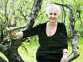
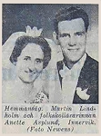

Gunborg Anette Maria Asplund Lindholm
Folkskollärarinna, speciallärare, bondmora, författare, släktforskare.
| Född: | 1938-03-03 Ö. Nyliden, Skellefteå lfs, Skellefteå sn. [1] | |
|---|
| Änka: | 2002-05-22 Innervik 44:1, Innervik 402, Skellefteå lfs, Skellefteå kn. [2] | Änka
2002-05-22
Innervik 44:1, Innervik 402, Skellefteå lfs, Skellefteå kn
man91 / RFV 06
|
|---|
| Vigsel: | 1962-08-04 Skellefteå lfs, Skellefteå sn. [3] |
|---|
| Levde: | 1971 Innervik postlåda 7516, Skellefteå, Skellefteå lfs, Skellefteå kn. [4] |
|---|
| Levde: | 1981 Innervik 44:1, Innervik postlåda 7516, Skellefteå lfs, Skellefteå kn. [5] |
|---|
| Levde: | 1991 Innervik 44:1, Innervik 402, Skellefteå lfs, Skellefteå kn. [3] |
|---|
Noteringar
"Anette Lindholm går aldrig i pension", var rubriken på Norrans lördagsreportage från sommarmöte med henne. Att ligga på sofflocket har aldrig klingat rätt i öronen på Anette Lindholm född 1938 i Nyliden, nära Skråmträsk. Hon har sommaren 2012 gett ut sn tionde bok "Jorden jag ärvde".
Anette Lindholm arbetade före pensioneringen som speciallärare i Bureå. Under tiden i yrket upptäckte hon sitt intresse för att skriva lärobäcker, något som kom att utvecklas till att även bli andra sorters böcker.
2007 gav hon ut boken "Viola", som handlar om hennes mor.
2012 gav hon ut boken "Jorden jag ärvde", som är tillägnad hennes far, men rymmer även en hel del historia från olika århundranden.
Förutom skrivande sköter hon även själva utgivandet och en del av fotograferandet. Layouten till den senaste boken fick hon hjälp med av sitt barnbarn.
Utdrag ur Norrans Helgbilaga Sommarmöte med Anette Lindholm sidan 21.
Publicerat 2012-06-30
Text: Frida Öhman
Foto: Leif Andersson
___________________________________________________________________________
BIBLIOGRAFI
Böcker av Anette finns på följande länk:
www.bja-asplund.com
Bildämnet på högstadiet (skrevs tillsammans med en bildlärare)
Läs Lättare 1
Norrut med pappa (skrev färdig en bok som min bror Helge påbörjat)
Blå Planeten (utgav ett manus som Helge skrivit)
Rövarspråket (skrev tillsammans med tre barnbarn)
Bilderna bakom orden (skrev tillsammans med fjärde barnbarnet)
Tips till Söderut med Majen (bara ett häfte)
Tips till Norrut med pappa (bara ett häfte)
Mor Vioas Visor (saknar ISBN- nummer)
Boken om Viola
Jorden jag ärvde (den senaste boken, har ej kommit in på hemsidan ännu)
Anette säger hösten 2012: "att jag nu har tio ISBN-nummer".
Personhistoria
| Årtal | Ålder | Händelse |
|---|
| 1938 |
|
Födelse 1938-03-03 Ö. Nyliden, Skellefteå lfs, Skellefteå sn [1] |
| 1946 |
8 år |
Brodern Helge Gunnar Sixten Asplund föds 1946-09-07 Ö. Nyliden, Skellefteå lfs, Skellefteå sn [4] |
| 1948 |
10 år |
Brodern Alf Bertil Johannes Asplund föds 1948-06-30 Ö. Nyliden, Skellefteå lfs, Skellefteå sn [4] |
| 1955 |
17 år |
Brodern Nils Anders Åke Asplund föds 1955-04-28 Ö. Nyliden, Skellefteå lfs, Skellefteå sn [4] |
| 1962 |
24 år |
Vigsel Nils Martin Lindholm 1962-08-04 Skellefteå lfs, Skellefteå sn [3] |
| 1971 |
|
Levde Nils Martin Lindholm 1971 Innervik postlåda 7516, Skellefteå, Skellefteå lfs, Skellefteå kn [4] |
| 1977 |
39 år |
Fadern Johan Gunberg (Gunnar) Asplund dör 1977-11-22 Ö. Nyliden, Skellefteå lfs, Skellefteå kn [6] |
| 1981 |
|
Levde Nils Martin Lindholm 1981 Innervik 44:1, Innervik postlåda 7516, Skellefteå lfs, Skellefteå kn [5] |
| 1991 |
|
Levde Nils Martin Lindholm 1991 Innervik 44:1, Innervik 402, Skellefteå lfs, Skellefteå kn [3] |
| 1998 |
60 år |
Brodern Helge Gunnar Sixten Asplund dör 1998-07-12 Nyliden 24, Klutmark, Skellefteå lfs, Skellefteå kn [7] |
| 2002 |
64 år |
Maken Nils Martin Lindholm dör 2002-05-22 Innervik 44:1, Innervik 402, Skellefteå lfs, Skellefteå kn [2] |
| 2002 |
64 år |
Änka 2002-05-22 Innervik 44:1, Innervik 402, Skellefteå lfs, Skellefteå kn [2] |
| 2004 |
66 år |
Modern Anna Viola Sofia Lindmark dör 2004-12-08 Nyliden 22, Skellefteå lfs, Skellefteå kn [2] |
Dokument
Källor
| [1] | SCB Födda AC Skellefteå lasarett 52/1938, Skellefteå lfs 62/1938 |
| |
| | |
| [2] | man91 / RFV 06 |
| |
| | |
| [3] | Mantalslängd 1991, Västerbottens län |
| |
| | |
| [4] | Mtl Västerbottens län 1971 |
| |
| | |
| [5] | Mtl Västerbottens län 1981 |
| |
| | |
| [6] | RTB 77 / SPAR 80 |
| |
| | |
| [7] | RTB 98 / SPAR 92f |
| |
|
|  |
2012-06-30. Anette Lindholm i Innervik, Skellefteå
Bondmora, Speciallärare, Författare.
Foto: Leif Andersson, Norran.se
|
| |
|  |
1962-08-15. Vigsel: 1962-08-04
Vigselfoto i Norra Västerbotten
Mar tin Lindholm och Anette Asplund, Innervik.
|
|
{kind=link}
{kind=link}